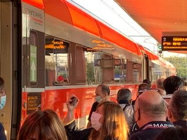
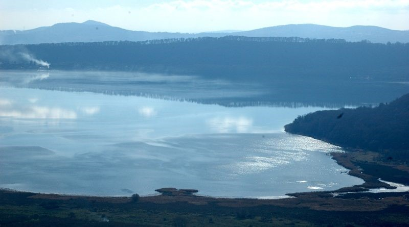

In particolare dovranno essere individuate da parte della politica delle istituzioni risposte fattibili per migliorare:
qualità della vita nelle città e nei piccoli centri, in particolare per la gestione della viabilità e del traffico;
collegamenti viari regionali e nazionali;
Istruzione, cultura, convegnistica, turismo e termalismo;
Ambiente e fruibilità dei beni ambientali e culturali
l'industria del turismo e ricettività del Belpase Italia, ed in particolare della nostra Tuscia.
Servizi sanitari di base e medicina territoriale.
LaTuscia dovrà attrezzarsi altresì per potenziare e valorizzare i settori ambientale e della qualità della vita, soprattutto in termini di cultura, monumenti natura, cura dell’alloggio con la qualificata rete di alberghi e agriturismi, con alimentazione di qualità dei ristoranti tipici, con trasporti da efficientare, sport e divertimenti, shopping di qualità prevalentemente nei Centri Storici e souvenir.
Ci domandiamo se lo sviluppo della Tuscia abbia beneficiato appieno degli investimenti avviati del Piano Nazionale di Ripresa e Resilienza cantierizzati e realizzati dai comuni e dalla provincia con in alcuni casi l’opportuna assistenza tecnico amministrativa della Provincia di Viterbo stessa nelle procedure di affidamento dei lavori, ovvero attraverso i Fondi europei .
Va tenuto presente che quasi come prolungamento del Giubileo del 2025 in Italia celebreremo nel 2026 un Anno Francescano ( 4 ottobre 1226 2026) per gli Ottocento anni della morte (transito) di San Francesco di Assisi, patrono d’Italia e dell’Ecologia, appuntamento che deve trovare la Tuscia pronta ad offrire il meglio di se’stessa ai visitatori di Viterbo e della Tuscia che conservano le memorie del passaggio di Francesco di Assisi, con adeguate “alternative” religiose culturali alla romanocentricita’ del turismo nazionale e internazionale.
In un’ottica orientata alle cose fatte, a quelle da fare, alle esigenze che le nostre popolazioni vorrebbero essere realizzare in primo luogo per migliorare la qualità della vita quotidiana e poi per la ricettività turistico-culturale, vorrei stilare una classifica breve su quanto si sta concretizzando e quanto ancora c’è da fare per l’

affermazione di un vero modello di sviluppo qualificato della Tuscia viterbese.Fermata Alta Velocità Roma Milano ad Orte dal 13 giugno 2021: cinque anni al servizio delle opportunità di business e di turismo per il Centro Italia,.
La strategicita’ dei Centri storici e le loro tipicità ambientali, culturali, ed eno-gastronomiche, un patrimonio da tutelare e valorizzare
Il collegamento inscindibile tra Agricoltura, Ambiente, Paesaggio ed insediamenti urbani, intesa nel senso di una coerenza con il “genius loci” - con il quale si indica l’insieme delle caratteristiche socio-culturali, architettoniche, di linguaggio, di abitudini che caratterizzano un luogo, un ambiente, un territorio, una città - deve essere concretamente declinato come tutela delle peculiarità della Tuscia, nella sua varietà di unicità ambientali .
I nostri Centri storici sono caratteristici poiché sorti nei secoli dal mare ai laghi, dalle colline alla valle del Tevere, dall’archeologia ai luoghi suggestivi, di valore religioso e storico-ambientale che attraversano praticamente tutti i periodi storici, con testimonianze architettonico-monumentali e artistiche che spaziano dagli Etruschi e Romani, al Medioevo, sino al Rinascimento e all’archeologia agricolo-industriale (penso alle Stazioni dismesse delle linee ferroviarie o le Case cantoniere sorte sulle vie stradali) di interessanti siti della produzione, delle reti viarie, dei trasporti e delle dimore storiche, realizzati dal XVII al XX secolo.
Chi vuole il vero sviluppo della Tuscia deve essere cosciente che tutto questo patrimonio è a disposizione di privati, volontariato e istituzioni per coniugare la tradizione di mestieri con il lavoro agricolo, artigianale e piccolo-industriale, con le eccellenze delle tipicità enogastronomiche e la presenza agrituristica e termale, l’innovazione e la ricerca dell’Università della Tuscia, i Turismi di qualità, esclusività e di innovazione.

Veduta del Lago di Vico: peculiarità ambientale da salvaguardare.
“Le priorità infrastrutturali ed intermodali per evitare l’isolamento”.
E’ determinante rivedere il quadro della mobilità e dei trasporti in questo tratto di Italia centrale. Da qui l’idea di realizzare un collegamento ferroviario ad alta velocità in grado di collegare per la prima volta le realtà come Civitavecchia, Orvieto, Viterbo, Rieti e Umbria giornalmente con Milano, attraverso il nodo intermodale di Orte, strategicamente rilevante per l’intero Paese (i lavori della superstrada recentemente avviati per il penultimo lotto di ultimazione ne sono un esempio chiaro che andrebbe esteso per completare il quadro alle Vie Consolari ed alle ferrovie così dette minori, anche con qualche decisione coraggiosa orientata alla finanza di progetto ed alle concessioni). Senza un sistema infrastrutturale significativo di potenziamento e ammodernamento delle linee ferroviarie e stradali (vie consolari Cassia , Aurelia e Flaminia ) questa provincia - ci è stato ripetuto sino all’inverosimile - è destinata a un declino irreversibile, perdendo la possibilità di sfruttare le grandi risorse di cui dispone, come le (ancora incontaminate) bellezze storico-ambientali, la vocazione agricola, gli impianti termali.
“Il termalismo, l’artigianato artistico, il turismo congressuale, formativo-professionale in collegamento con la Ricerca Universitaria e la sua rete diffusa nel territorio, i percorsi ciclo-pedonabili e a cavallo come volani di crescita per la Tuscia”,
Per valorizzare il termalismo della città di Viterbo, ma anche di altri siti legati alle acque salubri di cui è ricchissimo il nostro territorio, l’artigianato artistico legato alle secolari tradizioni di laboriosità delle comunità dell’area falisca di Civita Castellana, della Valle del Tevere, della costa e maremma Laziale, del comprensorio montano dei Cimini, dell’Alto Lazio legato alla Via Francigena e al percorso degli Etruschi, oltre alla città di Viterbo e dei suoi incantevoli dintorni con siti archeologici e dimore storiche, il turismo congressuale, le città ed i Poli del Teatro, dei Musei e della Musica degli Strumenti Antichi con stagioni concertistiche già di successo, la diffusione di Festival culturali oltre Viterbo, i supporti delle Leggi regionali - Spettacoli dal vivo Reti commerciali di Strada - con la fattiva collaborazione di Enti regionali e comunali, le Città sedi delle Rievocazioni Storiche Medievali e Rinascimentali, lo sviluppo del trekking, dello Spartan-rice che tornerà’ quest’anno ad Orte nel ponte del 25 aprile e dei percorsi naturalistici percorribili a piedi, a cavallo, o attraverso piste ciclo-pedonabili sul Tevere), formativo-professionale in collegamento con la Città Universitaria e la sua rete diffusa ed a servizio dello sviluppo del territorio, dall’agricoltura al marketing territoriale, all’agricoltura alle costruzioni eco-compatibili.
Come più volte ribadito, occorre offrire parallelamente una infrastruttura immateriale adeguata, una rete tecnologica di telecomunicazioni avanzate a banda larga che renda il territorio attrattivo e globalmente connesso.
Sul fronte del patrimonio artistico–culturale vanno agevolate con il concorso della Regione Lazio e dei Programmi Europei di Sviluppo Sostenibile le azioni più concrete di rigenerazione e rinnovamento, per ridare energia e vitalità ai centri storici, con l’attuazione di un processo di propagazione e dilatazione anche del polo universitario (Università diffusa), sulla base di un’esperienza positiva già realizzata.
Stefano Stefanini